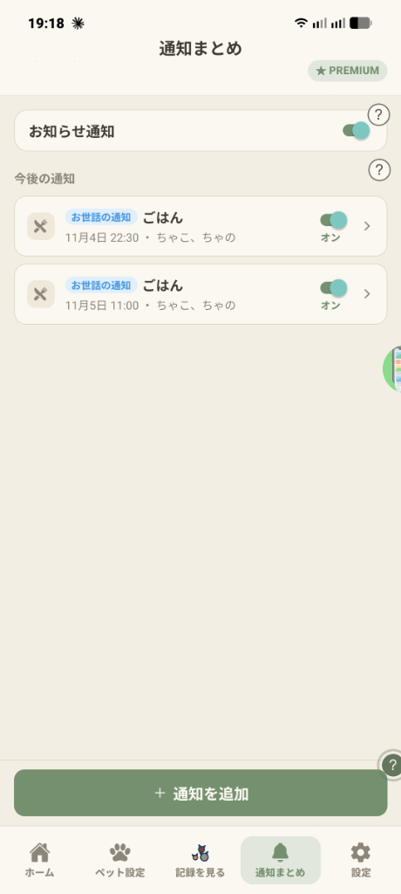

📖 はじめに（この画面でできること）
下部タブの「通知まとめ」では、アプリ全体の通知のオン/オフや、登録した通知の次回届く日時の確認、1件ごとのオン/オフ切り替え、新しい通知の追加が行えます。
📱 画面の各項目と使い方

「通知まとめ」タブ
STEP 1
お知らせ通知（通知全体のオン/オフ）
画面一番上の「お知らせ通知」スイッチは、アプリ全体のマスタースイッチです。オフにすると、予約済みの「お世話の通知」や「予定の通知」がすべて取り消されて届かなくなります。
STEP 2
今後の通知一覧（次回日時・対象ペット・個別スイッチ）
登録した通知が、次に届く日時と対象ペット名（例：11月4日 22:30 ・ ちゃこ、ちゃの）付きで並びます。
・右側のスイッチで、通知の設定を消さずに1件ずつオン/オフを切り替えられます。
・カードをタップすると、曜日や時刻、対象ペットの編集画面が開きます。
STEP 3
「＋通知を追加」と2時間前判定の仕組み
画面下の「＋通知を追加」ボタンから、「お世話の通知」または「予定と通知」を追加できます（お世話記録設定の「通知」列からも同じように設定できます）。
【重要】お世話の通知が届く条件：設定した曜日・時刻の2時間前までにその項目の記録がすでにあれば、その回の通知は出ません。まだ記録していないときだけ「〇〇の記録をしましょう」とお知らせします。
💡 よくある質問（FAQ）
Q すでにお世話を記録した日にも、お世話の通知は届きますか？
いいえ。通知時刻の2時間前までに記録が済んでいれば、その回の通知は自動でスキップされます。
Q すべての通知を一時的にまとめて止めることはできますか？
一番上の「お知らせ通知」スイッチをオフにするだけで、個別の通知設定を残したまま全通知を一括停止できます。
Q 複数のペットに同じ時刻のごはん通知を設定できますか？
はい。1つの通知セットで複数のペット（ちゃこ、ちゃの等）を対象に選べるため、同じ時刻の通知を何件も作る必要はありません。
Q 通知が届かないときはどこを確認すればよいですか？
①この画面一番上の「お知らせ通知」がオンか、②各通知カードのスイッチが「オン」か、③スマートフォンのOS設定で「ぺっときろく」の通知権限が許可されているかをご確認ください。